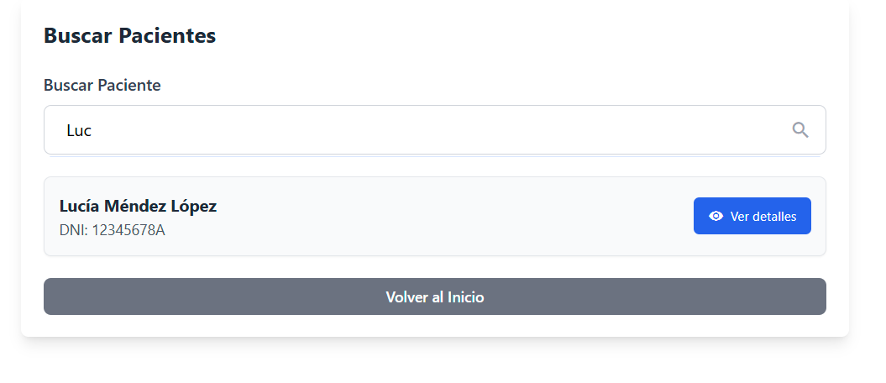

Descripción
Los médicos pueden buscar pacientes ingresando su nombre o DNI, y acceder a sus detalles personales y médicos.
Capturas de pantalla

Vista del buscador de pacientes.
Criterios y ranking
- Búsqueda por DNI exacto o nombre/apellidos con coincidencia parcial
- Orden: coincidencia exacta → comienzos → similares
Validaciones
- DNI con formato válido; nombre 2–60 caracteres
- Acceso restringido a pacientes asignados al médico
API y errores
- GET /api/pacientes?dni|nombre → 200 lista | 404 vacío
- GET /api/pacientes/{id} → 200 detalle | 403 si no está asignado
Rutas relacionadas
- Frontend: `/buscar-pacientes` (Angular Router)
- Backend: `/api/pacientes` (Spring Boot)